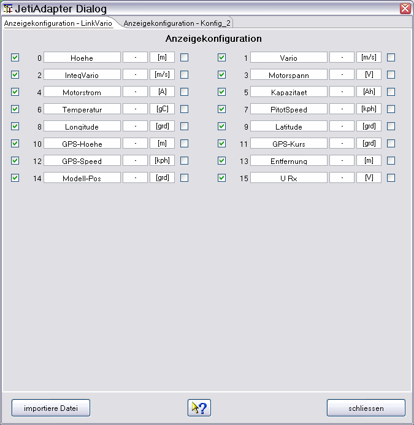

Der gezeigte Gerätedialog dient zur Konfiguration der Anzeige der ausgelesenen Daten. Es können die Messwertnamen und Messwertsymbole angepasst werden. Die Messwerteinheiten sind ebenfalls änderbar, es ist aber wenig sinnvoll hier etwas anzufassen, wenn nicht auch ein passender Messwertfaktor angelegt wird. Man muss daran denken, dass die Namen und Einheiten aus dem Aufzeichnungslog selbst kommen und sie beim Auslesen überschrieben werden. Nicht selektierte Messgrößen erscheinen nicht in der grafischen Anzeige. Messgrößen, die keinen Daten enthalten werden ebenfalls automatisch ausgeblendet, obwohl sie hier selektiert sind. Dadurch wird die Übersichtlichkeit stark erhöht. Kurven, wie Längengrad und Breitengrad, die zweidimensional dargestellt wenig Sinn ergeben, können ausgeblendet werden. Über einen Dateiauswahldialog, erreichbar über "importiere Datei", können auch neue Dateien Eingelesen werden. Die GPS-Daten, die zur Anzeige in Google Earth oder zum Export von KMZ/KML Dateien benötigt werden haben durch den Logaufbaut keine feste Zuordnung. Längengrad, Breitengrad und die absolute Höhe (GPS Höhe, Abs. Höhe) werden soweit als möglich uber die Namensgebung erkannt. Nur bei erfolgreicher Erkennung dieser drei Werte wird die dadurch resultierenden Exportmöglichkeiten eingeblendet. So z. B. als Google Earth Dateien (KMZ) exportiert, bzw. direkt angezeigt werden. Nähere Beschreibung dazu siehe Toolbar -> Google Earth.

Es gibt 2 vorbereitete Messwertkonfigurationen, die für 2 verschiedene Sensorsets benutzt werden können. Die gezeigten Bilder zeigen den Dialog für einen geladenen Log und wurde auf die tatsächlich vorhandenen Messwerte reduziert. Über den Geäteeigenschafteneditor können auch nachträglich weitere Konfigurationen hinzugefügt oder der Konfigurationsname selbst kann geändert werden, sollte das einmal erforderlich sein. Weil andere Sensorzusammenstellungen in andere Messwertreihenfolgen resultieren kann als Standard nur eine einfache statistische Auswertung erfolgen. Zur Information zu den statistischen Möglichkeiten siehe Statistik Fenster.
Auf der rechten Rand der Anzeigenkonfiguration befindet sich ein zusätzlicher Schalter, der eine halbautomatische Synchronisation der Skalen ermöglicht. Wird hier selektiert wird auf Namensgleichheit geprüft, bei entsprechender Übereinstimmung wird in der Gerätekonfigurationsdatei bei den Messwerten die entsprechende Eigenschaft eingesetzt. Funktioniert das nicht automatisch, bleibt immer noch die Möglichkeit das manuell über den Geäteeigenschafteneditor einzustellen. Durch Skalensynchronisation wird die verfügbare Anzeigefläche vergrößert und es können Messwertaufnehmer direkt verglichen werden ohne den Kurvenvergleich zu benutzen.
Namen der Kurven sollten möglichst eindeutig sein, Beispiel Strom Antrieb, Strom Rx, Spannung Antrieb, Spannung Rx. Die Kurvennamen sollen so gewählt sein, dass im Falle eine gewünschten Skalensynchronisation, die Namen mit den gleichen Wort anfangen wie die Kurve auf die synchronisiert werden soll, Beispiel Strom synchronisiert mit Storm Antrieb, Strom Rx, Strom Antrieb 2). Darauf basiert die halbautomatische Synchronisation. Über den Geräteeigenschafteneditor kann man bei beliebigen Messkurven eine Skalensynchronisation konfigurieren. Sinn macht das Ganze aber nur, wenn die Wertebereiche in zusammenpassen. Stimmen die Messwerte aus den Sensoren mit den Kurvennamen und Einheiten überein kann mit der Checkbox auf der rechten Seite auf Skalensynchronisation geprüft werden.
Hinweis: Werden Messwertnamen geändert führt das in der Gerätekonfigurationsdatei zu einer Änderung. Ändert sich in einer späteren DataExplorer Version das Gerätekonfigurationsdateischema (DeviceProperties_Vxy.xsd), wird eine Sicherung aller vorhandenen Gerätekonfigurationsdateien angelegt (Devices_Vxy-1) und geht nicht verloren. Die veraltete Gerätekonfigurationsdatei kann dann als Vorlage für die neue verwendet werden.